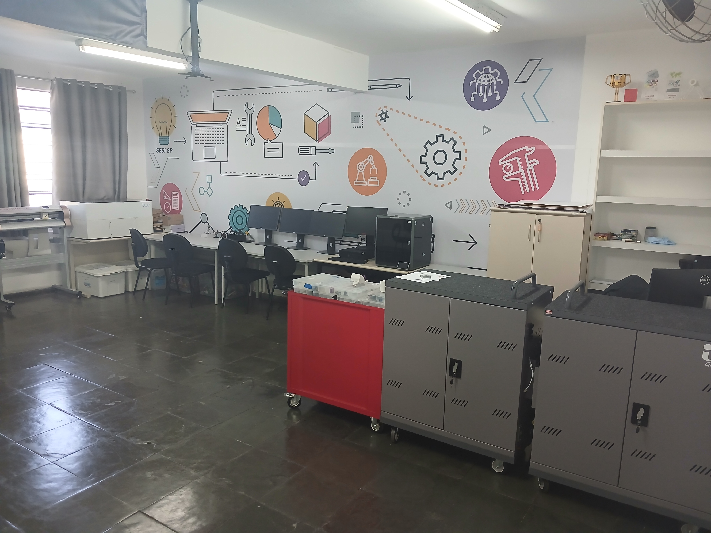

ESPAÇO MAKER CE-397
Bem-vindo ao portal Maker CE-397
o portal Maker CE-397 vem oferecer uma nova proposta de registrar,
organizar e compartilhar os projetos desenvolvidos em nosso Espaço Maker.
Mais do que um site, este portal representa um ambiente de aprendizagem, criatividade,
inovação e construção coletiva do conhecimento. Acreditamos que aprender vai além da teoria. Em nosso laboratório, ideias
transformam-se em projetos, desafios tornam-se oportunidades de aprendizagem e o
conhecimento é construído por meio da experimentação, da investigação e da prática.
Nossa proposta pedagógica está fundamentada nos princípios da Cultura Maker,
da abordagem STEAM (Ciência, Tecnologia, Engenharia, Artes e Matemática) e do
Desenho Universal para a Aprendizagem (DUA). Dessa forma, buscamos desenvolver
experiências que valorizem a criatividade, a resolução de problemas, o trabalho
colaborativo e a construção de conhecimentos por diferentes caminhos, respeitando as
necessidades e as potencialidades de cada estudante.
Neste portal você encontrará projetos educacionais desenvolvidos em nossa unidade,
documentados passo a passo para que possam servir de inspiração e referência para
professores, estudantes e demais interessados na Educação Maker. Cada projeto foi
concebido para integrar teoria e prática, promovendo uma aprendizagem significativa
por meio da experimentação, da prototipagem e da inovação.
Nosso objetivo é construir um acervo digital permanente, preservando as experiências
realizadas no Espaço Maker CE-397 e compartilhando metodologias, materiais e conhecimentos
que possam contribuir com outras iniciativas educacionais.
O Portal Maker CE-397 reunirá fotografias, vídeos, produtos educacionais,
projetos de robótica, impressão 3D, corte a laser, programação, eletrônica,
modelagem e prototipagem, além de materiais de apoio e documentação técnica
produzidos em nosso laboratório.
Convidamos você a explorar este espaço, conhecer nossos projetos e acompanhar
a evolução de um ambiente onde educação, tecnologia, criatividade e inovação
caminham juntas para transformar ideias em experiências de aprendizagem.
Criando, documentando e compartilhando projetos educacionais.